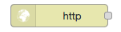
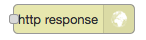
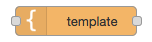

Inleiding NodeRed¶
In deze opdrachten maak je kennis met NodeRed. Je gebruikt NodeRed voor een paar eenvoudige IoT-toepassingen: het koppelen van IoT-apparaten, het koppelen van diensten, en een dashboard van een IoT-apparaat (of IoT-knoop). Met dit dashboard kun je op een computer of op een smartphone de toestand van de IoT-knoop waarnemen en de IoT-knoop besturen.
Met NodeRed kun je allerlei protocollen, diensten en besturingen aan elkaar koppelen, op een grafische manier. Hiermee kun je je IoT-keten samenstellen van sensoren en actuatoren tot Data Science- en Artificial Intelligence-diensten.
Wat heb je nodig?
- NodeRed-installatie
bijvoorbeeld: FRED - https://fred.sensetecnic.com (gratis versie)
- een IoT-knoop, bijvoorbeeld:
een gesimuleerde IoT-knoop (zie http://infvopedia.nl/iotnode-app.html);
een IoT-knoop “elders”;
een eigen hardware IoT-knoop, bijvoorbeeld een ESP8266-knoop met het programma
esp8266-node-0(zie https://infvo.github.io/iot-1/html/combinatie.html)
Voorbereiding¶
Lees als voorbereiding op de NodeRed-opdrachten eerst onderstaande tekst. Doe dit bij voorkeur met een geopende versie van NodeRed, zodat je de verschillende onderdelen direct kunt vinden en uitproberen.
Nodes en knopen: om verwarring te voorkomen gebruiken we in deze opdrachten het woord “knoop” voor een IoT-knoop (IoT-apparaat), en “node” voor een NodeRed-node.
Nodes en flows¶

NodeRed http flow-voorbeeld¶
Een flow in NodeRed bestaat uit een netwerk van nodes en verbindingen. Het aansluitpunt (bolletje) aan de linkerkant van een node is de input. Een node zonder aansluiting links is een input-node, met een externe input, bijvoorbeeld een http-request. De outputs staan aan de rechterzijde van de node. Een node zonder aansluiting rechts is een output-node, met een externe output, bijvoorbeeld een http-response.
Een NodeRed-toepassing kan uit meerdere flows bestaan: elke flow heeft een eigen pagina (tab).
figuur |
naam |
soort node |
 |
http-input-node |
input |
 |
http-output-node |
output |
 |
template-node |
in-out |
Hoe werkt een flow? Als een node een bericht (message) krijgt via de input, dan voert deze node daarop een bewerking uit, en genereert één of meer messages naar de output(s). Deze output is weer verbonden met de input van een andere node; of de node is een output-node, met een externe output.
NodeRed http flow-voorbeeld¶
Voor het bovenstaande flow-voorbeeld: (i) de http-input-node ontvangt een http-request als
de http-method gelijk is aan get en het URL-pad gelijk is aan /hello.
Deze http-input-node stuurt dan een message met dit request naar
(ii) de template-node hello.html.
Deze genereert de bijbehorende output: een html-document,
en stuurt een message met dit document naar
(iii) de http-output-node, die uit de message de bijbehorende response samenstelt.
Deze node stuurt de response naar de afzender van het http-request.
NodeRed UI¶
{kind=link}
In het NodeRed user interface vind je rechts bovenin de Deploy-knop en het hamburgermenu (drie streepjes). Daaronder, van links naar rechts:
- (alleen FRED) FRED-sidebar
met het pijltje linksonder maak je deze (on)zichtbaar
het node-palette. Uit dit palette sleep je nodes die je wilt gebruiken naar het flow-gedeelte. Er zijn onder andere input-nodes (met een bolletje rechts), output-nodes (met een bolletje links) en function-nodes (met links en rechts een bolletje). Er zijn nodes voor allerlei protocollen, bijvoorbeeld: HTTP, TCP, MQTT. Er zijn ook nodes voor communicatie met diensten zoals bijvoorbeeld Twitter.
- het flow-gedeelte. Dit bestaat uit verschillende flow-tabs.
Met “+” maak je een nieuwe flow-tab aan.
Door double-click op de flow-naam krijg je het configuratie-venster voor deze flow te zien. Hiermee kun je de flow hernoemen, tijdelijk uitschakelen (disable), of verwijderen (delete).
- de info/debug/dashboard-sidebar
de info-tab geeft informatie over de geselecteerde node in het flow-gedeelte.
de debug-tab geeft de debug-output van de huidige flow, of van alle flows.
via de dashboard-tab kun je de UI-instellingen van het dashboard veranderen.
De volgende oefeningen zijn bedoeld om vertrouwd te raken met het user interface. Deze oefeningen hebben geen effect op de flows zelf.
Oefenen met het NodeRed interface
- klik op het hamburgermenu, en zoek de instellingen voor:
het (on)zichtbaar maken van de sidebar (info/debug/dashboard)
het importeren van flows (vanuit het Clipboard)
het zichtbaar maken van de tab met configuratie-nodes
- zoek in het palette:
HTTP input-node
MQTT output-node
Twitter output-node
- voeg een nieuwe flow-tab toe (via “+”)
hernoem deze tot “Test-flow”
- (alleen voor FRED):
maak de FRED-sidebar (links) onzichtbaar en weer zichtbaar
Dashboard-nodes installeren¶
Installeren van dashboard-nodes
De dashboard-nodes zijn niet altijd beschikbaar in het node-palet links.
Als je FRED gebruikt, dan installeer je de dashboard-nodes als volgt:
selecteer in de FRED-zijbalk (helemaal links): Tools-> add or remove nodes
type in het zoekveld: dashboard
vink aan: Dashboard (a set of dashboard nodes for NodeRed).
Voor een normale NodeRed-installatie gebruik je de volgende stappen:
selecteer hamburger-menu (rechts) -> Manage Palette
selecteer de tab Install
type in het zoekveld: dashboard
klik op “install” voor node-red-dashboard (A set of dashboard nodes for Node-RED)
na deze installatie zijn de nodes in het palet links beschikbaar.
NodeRed FAQ¶
hoe (de)activeer ik een hele flow?
Door double-click op de flow-tab krijg je het configuratievenster voor deze flow te zien. Je kunt de flow (de)activeren via Status (Enabled of niet). Het is soms handig om een flow te deactiveren, als deze andere flows in de weg zit. Of als dit een test-flow is die je zo nu en dan nodig hebt.
Je kunt de flow (tab) hier ook een andere naam geven, of helemaal verwijderen.
hoe maak ik de info/debug-sidebar (on)zichtbaar?
Via het hamburgermenu->View->Show sidebar.
hoe maak ik de FRED sidebar (on)zichtbaar?
Deze sidebar kun je (on)zichtbaar maken via het pijltje in de hoek linksonder.
hoe verwijder ik een hele flow?
Double-click op de flow tab: klik in het configuratie-venster op Delete, links boven. Door “Deploy” maak je de aangepaste flows actief.
hoe installeer ik extra nodes?
Er zijn veel soorten nodes beschikbaar voor allerlei protocollen en toepassingen. In de NodeRed library vind je veel voorbeelden.
Bij een standaard NodeRed installatie kun je extra nodes meestal installeren via hamburgermenu->Manage palette. Voor een uitgebreidere uitleg, zie https://nodered.org/docs/getting-started/adding-nodes.
In FRED kun je nodes installeren via de FRED sidebar, helemaal links. Deze sidebar kun je (on)zichtbaar maken via het pijltje in de hoek linksonder.
Voorbeeld: installeren van nodes voor TTN (THe Things Network):
selecteer Tools->Add or Remove Nodes
selecteer IoT
zet het vinkje bij Ttn (onderaan)
Na herstarten van de server verschijnen de TTN-nodes nu in het palette.
waar vind ik de verborgen nodes?
NodeRed gebruikt configuration nodes voor bijvoorbeeld de MQTT-server-instellingen, en voor de dashboard-instellingen. Deze configuration nodes kun je zichtbaar maken via hamburgermenu->Configuration nodes.
In de gratis versie van FRED heb je een beperking van maximaal 50 nodes. Daar tellen ook de verborgen nodes in mee.
de MQTT-nodes blijven hangen in de “connecting” toestand
Mogelijk ontbreken de security-gegevens (username/password van de MQTT broker). Double-click op de MQTT-node, en klik vervolgens op het potloodje naast de naam van de broker. In de configuratie van de broker selecteer je de tab “security”, en vult daar de username/password-combinatie van je broker in.